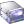

Nero Linux
Archivierte Anleitung
Dieser Artikel wurde archiviert, da er - oder Teile daraus - nur noch unter einer älteren Ubuntu-Version nutzbar ist. Diese Anleitung wird vom Wiki-Team weder auf Richtigkeit überprüft noch anderweitig gepflegt. Zusätzlich wurde der Artikel für weitere Änderungen gesperrt.
Zum Verständnis dieses Artikels sind folgende Seiten hilfreich:
Nero Linux ist ein Brennprogramm der Nero AG. Seit 2005 gibt es eine Variante des Programms für Linux, welche sich hervorragend in die unterschiedlichen Desktopumgebungen GNOME, Xfce und KDE integriert. Aktuell ist die Version 4. Diese kann von der Herstellerseite als Testversion heruntergeladen werden. Sofern man das Programm nach Ablauf der Testzeit weiter nutzen möchte, kann man die Lizenz dort ebenfalls erwerben. Die Linux-Version des Programms bietet jedoch nicht den gleichen Funktionsumfang wie die Windows-Version. Das Programm erlaubt das Brennen von Daten, Video- oder Musikdateien auf die Medien CD, DVD, Blu-ray und HD DVD.
Außerdem bietet es:
Ultra Buffer-Unterstützung
Konvertierung in verschiedene Audioformate
Playlists von Audio-CD Tracks erstellen
Kompatibilität mit FreeDB
Unterstützung von Drag&Drop / Copy & Paste
Brennen von Images (ISO, IMG, NRG und CUE)
Brennen über Konsole
Kopieren auf eine CD, DVD, HD DVD oder Blu-ray
Nero Linux Express 4  |
Ein komplette Liste der Funktionen findet man auf der Herstellerseite
Installation¶
Zunächst müssen folgende Pakete aus den Ubuntu-Quellen installiert werden [1]:
libc6
libstdc++6
libgtk2.0-0
libglib2.0-0
mpg123 (universe)
 mit apturl
mit apturl
Paketliste zum Kopieren:
sudo apt-get install libc6 libstdc++6 libgtk2.0-0 libglib2.0-0 mpg123
sudo aptitude install libc6 libstdc++6 libgtk2.0-0 libglib2.0-0 mpg123
Nun kann man die Testversion als Fremdpaket installieren.
Von Nero werden
DEB-Pakete  angeboten.
Die unterstützten Ubuntuversionen und Architekturen werden aufgelistet.
Nachdem man sie für die korrekte Ubuntuversion und Architektur geladen hat, müssen DEB-Pakete noch installiert werden.
angeboten.
Die unterstützten Ubuntuversionen und Architekturen werden aufgelistet.
Nachdem man sie für die korrekte Ubuntuversion und Architektur geladen hat, müssen DEB-Pakete noch installiert werden.
Hinweis!
Fremdpakete können das System gefährden.
Nach erfolgreicher Installation findet man das Programm im Menü unter:
"Applications -> Multimedia -> Nero Linux" (Xfce)
"Anwendungen -> Unterhaltungsmedien -> Nero Linux" (GNOME)
"Multimedia -> CD/DVD brennen -> Nero Linux" (KDE)
Zusätzlich findet man im Menü ab Version 4 den Eintrag "Nero Linux Express".
| Nero Linux 4 |
Bedienung¶
Beim ersten Programmstart kann man den Namen und die Seriennummer eingeben. In der Testversion bestätigt man die vorgegebene Nummer - hier erscheint dann bei jedem weiteren Programmstart ein Dialogfeld sowie der Hinweis, bis wann diese Version gültig ist. Nun sucht Nero nach der vorhandenen Hardware, um zu überprüfen, ob ein CD / DVD / Bluy-ray oder HD-DVD-Brenner vorhanden ist. Schließlich öffnet sich das Fenster Neue Zusammenstellung, welches alle wichtigen Einstellungen zum Brennen von Medien bereitstellt. Neben der Auswahl des zu beschreibenden Mediums legt man fest, welches Datenträgerformat man erstellen möchte. Je nach verbautem Laufwerk stehen dem Benutzer unterschiedliche Möglichkeiten zur Verfügung, z.B. DVD-ROM, Mixed Mode-CD, CD EXTRA und MiniDVD. Im Handbuch findet man eine Auflistung und Erklärung aller zur Verfügung stehenden Formate. Zu jeder getroffenen Auswahl gibt es mehrere Reiter, welche weitere Einstellungsmöglichkeiten mit sich bringen. Abschließend " Neu" anwählen, um mit dem Projekt zu beginnen.
Neu" anwählen, um mit dem Projekt zu beginnen.
Hauptfenster¶
und dienen der Navigation im Dateiverzeichnis. Dateien können per Drag & Drop im integrierten oder durch einen externen Dateimanager hinzugefügt werden. startet den Brennvorgang.
Hinweis:
Detaillierte Informationen zum Programm sind dem Handbuch zu entnehmen.
Die wichtigsten Bedienelemente:
| Bedienelemente | ||
| Menüpunkt | Beschreibung | Tastenkürzel |
Datei | Einstellungsoptionen vornehmen, Projekte verwalten ... | |
 | Neue Sitzung starten. | Strg + N |
| Projekt / Zusammenstellung öffnen. | Strg + S | |
| Projekt / Zusammenstellung abspeichern. | Strg + O | |
Bearbeiten | Dateioperationen durchführen ... | |
| Elemente kopieren. | Strg + C | |
| Elemente ausschneiden. | Strg + X | |
| Elemente einfügen. | Strg + V | |
Ansicht | Dateimanageraussehen anpassen, Leisten ein/ausblenden ... | |
Rekorder | Brenner auswählen, RW löschen, Image brennen ... | |
|  | Brenner auswählen. | Strg + R |
| Medium kopieren. | ||
Extras | Audiodateien konvertieren, importieren ... | |
Windows | Fenster anpassen | |
Hilfe | Hilfeoptionen, Seriennummer eingeben ... | |
Brennen¶
Das Brennen von Medien ist unter Nero in wenigen Schritten erledigt. Hierzu wählt man in " neue Zusammenstellung" die Art des Mediums aus, navigiert mittels und im Verzeichnis und zieht die gewünschten Dateien und Ordner mittels Drag & Drop in die linke Fensterhälfte. startet den Brennvorgang. Alternativ können die Daten auch mit einem anderen Dateimanager in die linke Fensterhälfte gezogen werden.
Image¶
Image-Rekorder¶
Um ein Abbild (Image) zu erstellen, legt man das Medium in das Laufwerk ein und wählt den Rekorder " Image Recorder" aus. Nun eine " neue Zusammenstellung" erstellen und das gewünschte Projekt starten. " Brennen" erstellt das Image, nachdem man den Dateinamen sowie den Typen angegeben hat. Es stehen *.nrg und *.iso zur Verfügung.
Brennen¶
Nero erkennt drei Arten von Images: *.iso, *.nrg und das Doppelpack *.bin / *.cue. Die .bin-Datei beinhaltet die Daten und die Struktur enthält die .cue-Datei. Mit dem Öffnen der Datei *.cue findet Nero die dazu passende *.bin im selben Ordner und verbindet die vorliegenden Dateien zu einer CD. Mittels " Brennen" werden die Daten auf das eingelegte Medium geschrieben.
 |
| Encoder |
Encodieren¶
Hinter dem Punkt "Extras -> Datei kodieren..." oder mit der Taste F8 erreicht man den Dekoder. Hier können diverse Audioformate wie mp3, mp4, flac, ogg und wav in eines der anderen Formate kodiert werden.
Konfiguration¶
Über "Datei -> Optionen" können diverse Einstellungen vorgenommen werden. Das Programm gestattet unter anderem das Überbrennen von Medien, ein-/ausblenden von versteckten Dateien und Ordnern, Festlegung des Startverzeichnisses im Dateimanager und Ändern der Buffergröße.
Lizenz¶
Die Lizenz von Nero wird unter ~/.nero/config gespeichert. Sofern man keine Lizenz für eine Vollversion besitzt, kann man diese käuflich erwerben. Hierzu kann man beim Programmstart den entsprechenden Link anwählen oder einen Reseller aufsuchen.
Hinweis:
Lizenzen für ein Produktupdate von Version 3 auf 4 können für 14,99€ erworben werden.
Tipps und Tricks¶
Verknüpfung¶
Bei der Installation wird ein Starter angelegt. Möchte man darüber hinaus noch eine Verknüpfung auf dem Arbeitsplatz haben, erstellt man diese mittels [2]:
cp /usr/share/applications/nerolinux.desktop ~/Desktop
Alternativ per Rechtsklick im Menü, und "Als Starter zur Arbeitsfläche hinzufügen".
Audio-CD ab Ubuntu 11.10 64bit¶
Ab Ubuntu 11.10 besteht die Problematik, dass Audio-CDs nicht mehr erstellt werden können. Nero gibt hier eine Fehlermeldung aus. Dies betrifft lediglich 64bit Systeme. Die Problemlösung ist simpel:
Zuerst muss in /usr ein Ordner lib64 angelegt werden, falls dieses noch nicht existiert.
sudo mkdir /usr/lib64
Danach muss dieser gegen /usr/lib/nero gelinkt werden.
sudo ln -s /usr/lib/nero /usr/lib64
Handbuch¶
Alle Funktionen sind in den Handbüchern beschrieben, welche als PDF heruntergeladen werden können. Diese sind sehr ausführlich. Neben den Basisfunktionen des Programms werden hier alle Aspekte beleuchtet und anwenderfreundlich beschrieben.
Konsole¶
Seit Nero 3.5 verfügt das Programm über eine Kommandozeile. Somit hat man die Möglichkeit, Nero in eigenen Skripten zu verwenden (z.B. für Backups) oder über ein Terminal [2] zu brennen. Hierzu wird nerocmd verwendet.
Die Vielzahl von Möglichkeiten ist den Manpages zu entnehmen.
Multisession¶
In Version 4 von Nero Linux ist es wegen einem Bug nicht möglich, eine Multisession-Disk fortzusetzen. Zum beheben einfach zwei Bibliotheken aus /usr/lib/nero nach /usr/lib kopieren:
sudo cp /usr/lib/nero/libISOFS.so /usr/lib/nero/libUDFImporter.so /usr/lib
Infobox¶
| Nero Linux 3 / 4 | |
| Systemvoraussetzungen: | Prozessor mind. 800 MHz Intel® Pentium® III / AMD™ Sempron™ 2200+ - mind. 128 MB RAM - mind. 700 MB (CD) / 9 GB (DVD) / 50 GB Blu-ray / (30 GB HD-DVD) Festplattenspeicher - Kernel 2.4+ |
| Medien: | Downloadversion |
| Dateigröße: | ca. 17 MB (Programm) / max. 3 MB (Handbücher) |
| Preis: | € 19,99 |
Links¶
Version 2 (Vö.: 21.02.2007)
Version 3 (Vö.: 18.06.2009)
Version 4 (Vö.: 22.12.2010)
Soziales Netzwerk
Sonstige Links
Herr der Flammen - Nero Linux 3 im Test - Artikel von Linux Magazin 08/2007
Erlaubnis.txt - Erlaubnis zur Verwendung des Bildmaterials und Veröffentlichung des Artikels

- Erstellt mit Inyoka
-
 2004 – 2017 ubuntuusers.de • Einige Rechte vorbehalten
2004 – 2017 ubuntuusers.de • Einige Rechte vorbehalten
Lizenz • Kontakt • Datenschutz • Impressum • Serverstatus -
Serverhousing gespendet von